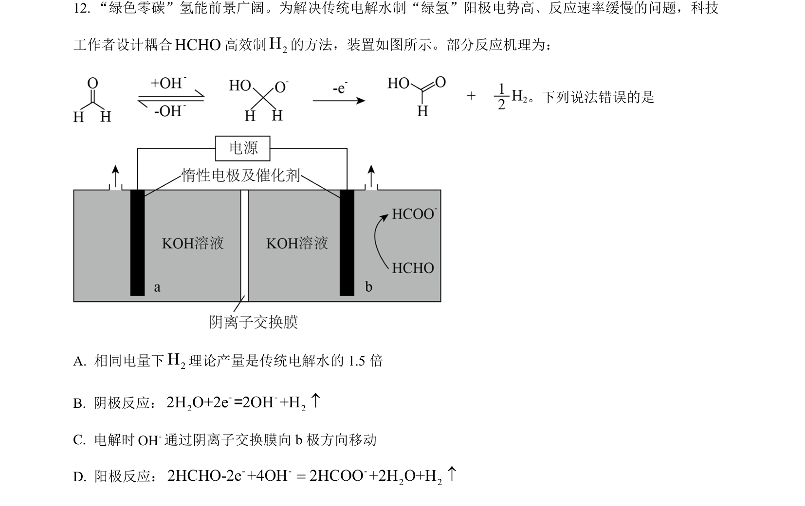
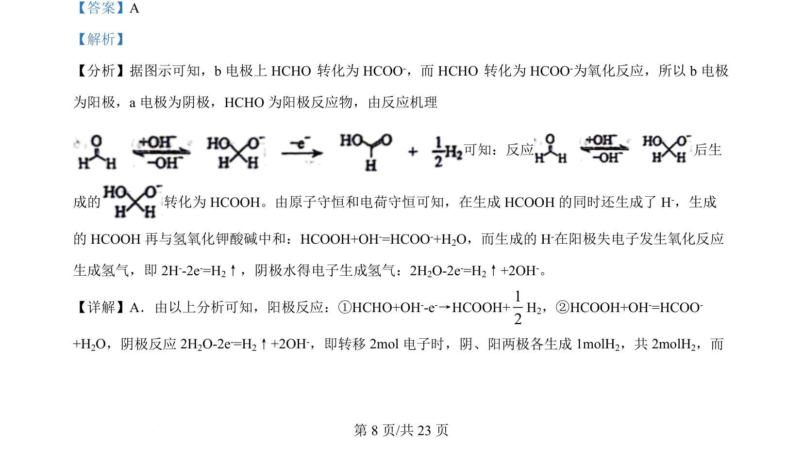
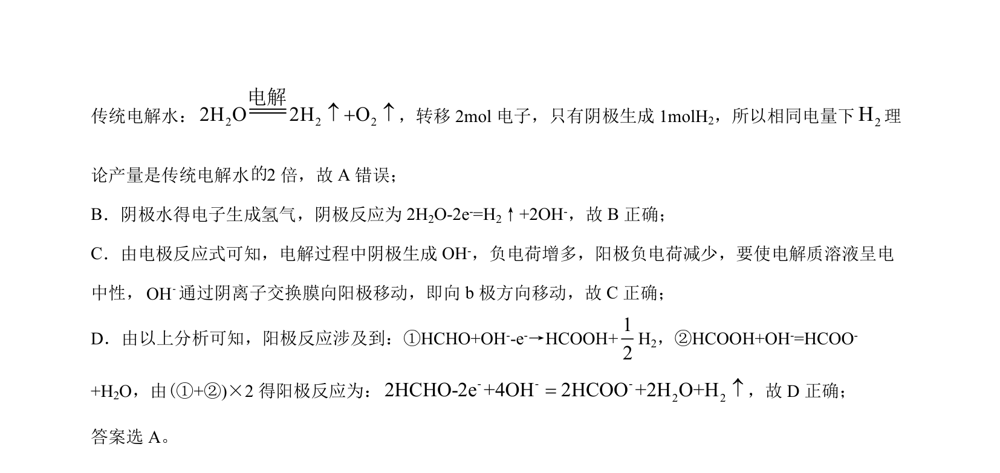

考点：电化学 电极反应 电子守恒 离子交换膜
电化学
电极反应
电子守恒
离子交换膜

电化学电解池中电极反应、电子转移计算及离子移动方向的分析


📄 原 PDF 第 8 页：素材/真题/吉林/2008-2024·（吉林）化学高考真题/2024年高考化学试卷（辽宁）（解析卷）.pdf
素材/真题/吉林/2008-2024·（吉林）化学高考真题/2024年高考化学试卷（辽宁）（解析卷）.pdf